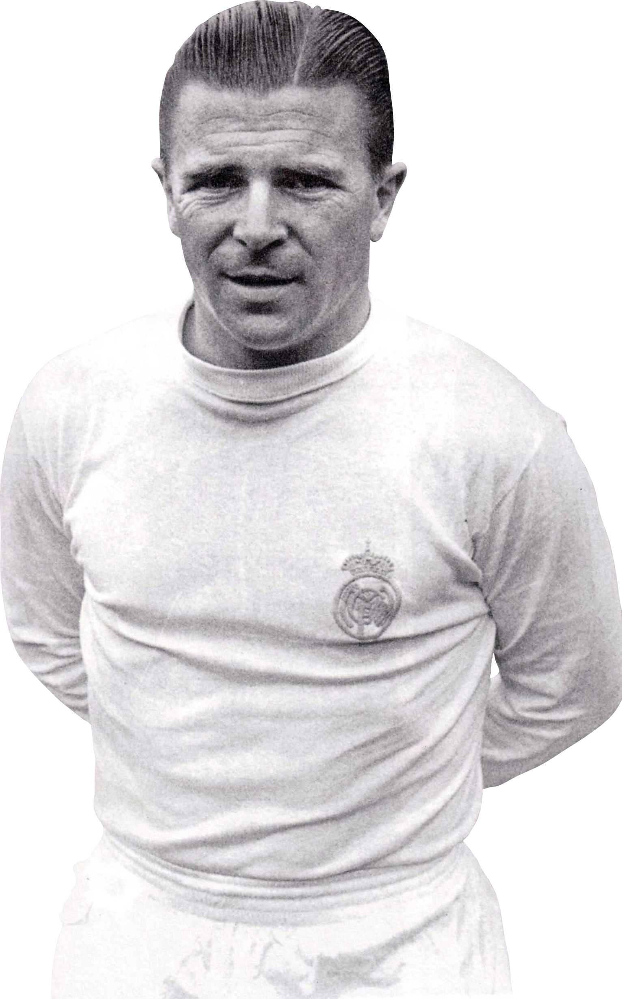

Ferenc Puskas
Ferenc Puskás Biró foi um futebolista e treinador húngaro. É considerado o maior futebolista da história da Hungria e um dos maiores futebolistas de todos os tempos. Defendeu também a Seleção Espanhola. O seu nome de batismo era Ferenc Purczeld Biró.